Observation window 2026-06-29 through 2026-10-01. Train through 2026-08-16, validation through 2026-09-06, holdout after that. Descriptive rates use every confirmed population A engagement. Rules and models are scored on the holdout only. Nothing here changes the live Leaving Soon score.
The earlier feature audit found that the last show date on today's listing is the signal that actually moves a Leaving Soon prediction. This page asks a narrower question: once that date is already inside the next 7 days, which of those endings stay put, and which ones gain a later showtime?
An extension is a kept screening after the listed date D whose first snapshot is after the observation. A revival after a 14-day dark gap is a new engagement, not an extension of this date. A show added and then removed before it played does not count. If no later show has been published and the engagement end is not confirmed, the row is left unlabeled.
Population A, the first snapshot on which the listed end is within 7 days: 1015 engagements, 401 later extended (39.5%). Of those, ordinary films that had already opened: 102 of 122 (83.6%). Population B, the first snapshot within 3 days: 1013 engagements, 388 extended (38.3%). Population C, change points (entering the window, entering 3 days, or the listed date moving): 2779 rows, 1336 extended (48.1%).
Model comparisons use population A. One row per engagement: the first snapshot on which the listed final date is within 7 days. That is the moment a near-term end becomes visible, without a stack of later days from the same run. Holdout: 174 engagements, 96 extensions (55.2%). Train 566 (193 extensions). Validation 275 (112 extensions).
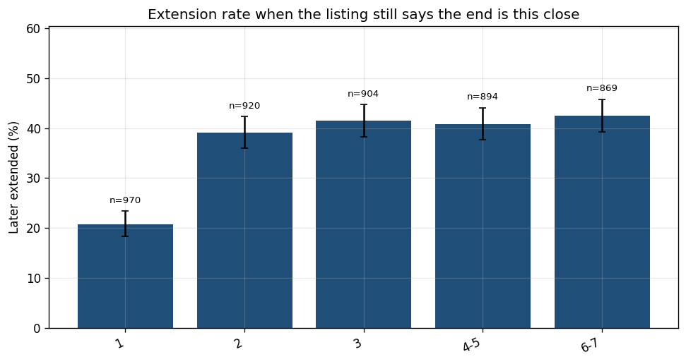
The chart is the first day the current listing sits in each bucket, so a run can appear in more than one row. Wilson intervals are 95%. The last table is a different cut: how far out the date was the first time it entered the 7-day window.
| Days still listed | N | Extensions | Rate | CI low | CI high |
|---|---|---|---|---|---|
| 6-7 | 869 | 369 | 42.5% | 0.392 | 0.458 |
| 4-5 | 894 | 365 | 40.8% | 0.377 | 0.441 |
| 3 | 904 | 375 | 41.5% | 0.383 | 0.447 |
| 2 | 920 | 360 | 39.1% | 0.360 | 0.423 |
| 1 | 970 | 201 | 20.7% | 0.183 | 0.234 |
| Days still listed | N | Extensions | Rate | CI low | CI high |
|---|---|---|---|---|---|
| 6-7 | 438 | 300 | 68.5% | 0.640 | 0.727 |
| 4-5 | 448 | 300 | 67.0% | 0.625 | 0.712 |
| 3 | 452 | 314 | 69.5% | 0.651 | 0.735 |
| 2 | 443 | 295 | 66.6% | 0.621 | 0.708 |
| 1 | 416 | 165 | 39.7% | 0.351 | 0.444 |
| Days still listed | N | Extensions | Rate | CI low | CI high |
|---|---|---|---|---|---|
| 4-5 | 396 | 290 | 73.2% | 0.687 | 0.774 |
| 3 | 374 | 275 | 73.5% | 0.688 | 0.777 |
| 2 | 390 | 265 | 67.9% | 0.632 | 0.724 |
| 1 | 393 | 157 | 39.9% | 0.352 | 0.449 |
| 6-7 | 141 | 124 | 87.9% | 0.815 | 0.923 |
| Days at first entry | N | Extensions | Rate | CI low | CI high |
|---|---|---|---|---|---|
| 6-7 | 801 | 319 | 39.8% | 0.365 | 0.433 |
| 3 | 41 | 35 | 85.4% | 0.716 | 0.931 |
| 1 | 82 | 0 | 0.0% | 0.000 | 0.045 |
| 4-5 | 34 | 10 | 29.4% | 0.168 | 0.462 |
| 2 | 57 | 37 | 64.9% | 0.519 | 0.760 |
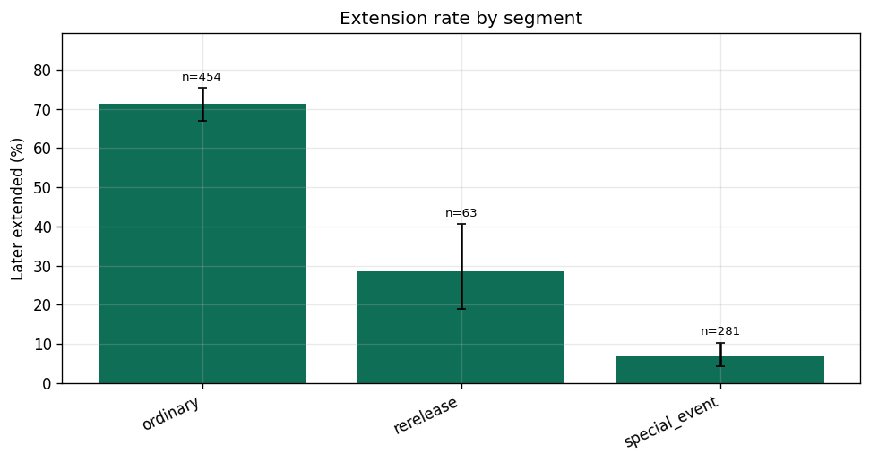
| Segment | N | Extensions | Rate | CI low | CI high |
|---|---|---|---|---|---|
| special_event | 281 | 19 | 6.8% | 0.044 | 0.103 |
| ordinary | 454 | 324 | 71.4% | 0.670 | 0.753 |
| special_event_title_only | 46 | 0 | 0.0% | 0.000 | 0.077 |
| ordinary_title_only | 122 | 18 | 14.8% | 0.095 | 0.221 |
| rerelease | 63 | 18 | 28.6% | 0.189 | 0.407 |
| ambiguous_special | 22 | 21 | 95.5% | 0.782 | 0.992 |
| rerelease_title_only | 7 | 0 | 0.0% | 0.000 | 0.354 |
| other | 3 | 0 | 0.0% | 0.000 | 0.562 |
| accessibility_presentation | 12 | 0 | 0.0% | 0.000 | 0.243 |
| ambiguous_limited | 5 | 1 | 20.0% | 0.036 | 0.624 |
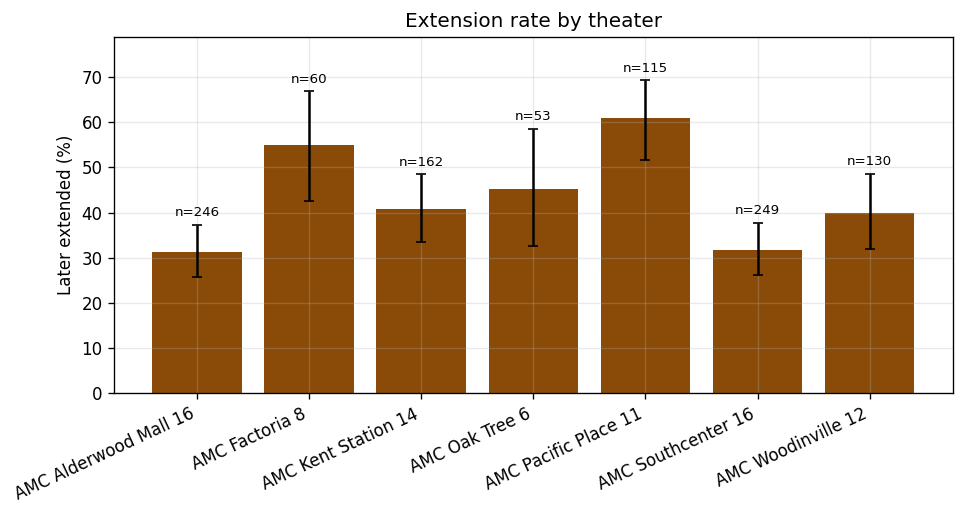
| Theater | N | Extensions | Rate | CI low | CI high |
|---|---|---|---|---|---|
| AMC Alderwood Mall 16 | 246 | 77 | 31.3% | 0.258 | 0.373 |
| AMC Southcenter 16 | 249 | 79 | 31.7% | 0.263 | 0.377 |
| AMC Kent Station 14 | 162 | 66 | 40.7% | 0.335 | 0.484 |
| AMC Pacific Place 11 | 115 | 70 | 60.9% | 0.517 | 0.693 |
| AMC Woodinville 12 | 130 | 52 | 40.0% | 0.320 | 0.486 |
| AMC Factoria 8 | 60 | 33 | 55.0% | 0.425 | 0.669 |
| AMC Oak Tree 6 | 53 | 24 | 45.3% | 0.327 | 0.585 |
| Listed end | N | Extensions | Rate | CI low | CI high |
|---|---|---|---|---|---|
| Thursday | 145 | 82 | 56.6% | 0.484 | 0.643 |
| Sunday | 55 | 6 | 10.9% | 0.051 | 0.218 |
| Wednesday | 458 | 257 | 56.1% | 0.515 | 0.606 |
| Friday | 42 | 28 | 66.7% | 0.516 | 0.790 |
| Monday | 134 | 9 | 6.7% | 0.036 | 0.123 |
| Tuesday | 126 | 11 | 8.7% | 0.049 | 0.150 |
| Saturday | 55 | 8 | 14.5% | 0.076 | 0.262 |
| Observed on | N | Extensions | Rate | CI low | CI high |
|---|---|---|---|---|---|
| Thursday | 133 | 70 | 52.6% | 0.442 | 0.609 |
| Sunday | 45 | 4 | 8.9% | 0.035 | 0.207 |
| Wednesday | 401 | 224 | 55.9% | 0.510 | 0.606 |
| Tuesday | 109 | 56 | 51.4% | 0.421 | 0.606 |
| Monday | 271 | 45 | 16.6% | 0.126 | 0.215 |
| Saturday | 39 | 2 | 5.1% | 0.014 | 0.169 |
| Friday | 17 | 0 | 0.0% | 0.000 | 0.184 |
Read the days chart as the operational curve: the listing still names an end this many days away, and the rate is how often that date later moves. A film can contribute to more than one bucket, once each, on the first day it sits in that bucket. The first-entry table answers a different question: how far out the date was the first time it entered the week.
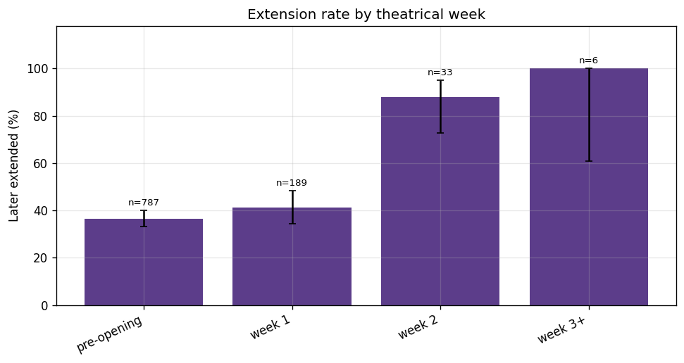
| Week | N | Extensions | Rate | CI low | CI high |
|---|---|---|---|---|---|
| pre-opening | 787 | 288 | 36.6% | 0.333 | 0.400 |
| week 1 | 189 | 78 | 41.3% | 0.345 | 0.484 |
| week 2 | 33 | 29 | 87.9% | 0.727 | 0.952 |
| week 3+ | 6 | 6 | 100.0% | 0.610 | 1.000 |
The hypothesis: a theater-level ending is less trustworthy when other Seattle AMC locations already list this film past that date. The opposite claim: when every location currently ends on the same date, that shared ending is more often real.
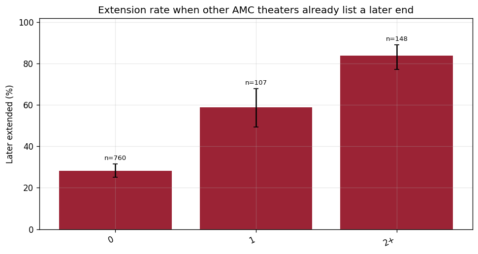
| Other theaters beyond D | N | Extensions | Rate | CI low | CI high |
|---|---|---|---|---|---|
| 0 | 760 | 214 | 28.2% | 0.251 | 0.315 |
| 1 | 107 | 63 | 58.9% | 0.494 | 0.677 |
| 2+ | 148 | 124 | 83.8% | 0.770 | 0.889 |
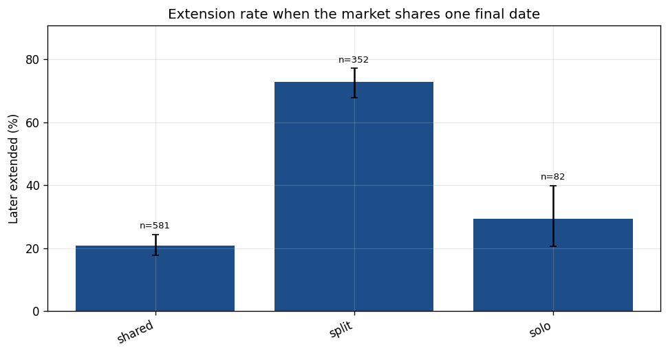
| Market state | N | Extensions | Rate | CI low | CI high |
|---|---|---|---|---|---|
| shared | 581 | 121 | 20.8% | 0.177 | 0.243 |
| solo | 82 | 24 | 29.3% | 0.205 | 0.399 |
| split | 352 | 256 | 72.7% | 0.678 | 0.771 |
Those pooled rates mix specials, which rarely extend, with ordinary runs. Ordinary films already open, and no other theater lists past this date: 54/69 (78.3%). Ordinary films already open, and two or more theaters already continue: 36/41 (87.8%). Once an ordinary film is open, other theaters continuing is a weaker distinction than the pooled chart suggests.
| Title | Theater | Observed | Listed end | Extended | Others beyond |
|---|---|---|---|---|---|
| Akira | AMC Pacific Place 11 | 2026-09-01 | 2026-09-04 | 1 | 4.0 |
| Avengers Endgame: Encore | AMC Alderwood Mall 16 | 2026-09-23 | 2026-09-30 | 1 | 2.0 |
| Avengers Endgame: Encore | AMC Kent Station 14 | 2026-09-23 | 2026-09-30 | 1 | 2.0 |
| Avengers Endgame: Encore | AMC Oak Tree 6 | 2026-09-23 | 2026-09-30 | 1 | 2.0 |
| Avengers Endgame: Encore | AMC Southcenter 16 | 2026-09-23 | 2026-09-30 | 1 | 2.0 |
| Avengers Endgame: Encore | AMC Woodinville 12 | 2026-09-23 | 2026-09-30 | 1 | 2.0 |
| Title | Theater | Observed | Listed end | Extended | Others beyond |
|---|---|---|---|---|---|
| Batman (1989) | AMC Alderwood Mall 16 | 2026-09-12 | 2026-09-19 | 0 | 0.0 |
| Batman (1989) | AMC Kent Station 14 | 2026-09-12 | 2026-09-19 | 0 | 0.0 |
| Batman (1989) | AMC Southcenter 16 | 2026-09-12 | 2026-09-19 | 0 | 0.0 |
| Batman (1989) | AMC Woodinville 12 | 2026-09-12 | 2026-09-19 | 0 | 0.0 |
| Batman: Mask of the Phantasm (2026BD) | AMC Alderwood Mall 16 | 2026-09-12 | 2026-09-19 | 0 | 0.0 |
| Batman: Mask of the Phantasm (2026BD) | AMC Kent Station 14 | 2026-09-12 | 2026-09-19 | 0 | 0.0 |
Day 0 is the listed final date D. A negative day means AMC published the extra showtime before that date arrived. For ordinary films, 27.5% of extensions are already on the schedule by D-2, 72.5% by D-1, and 99.4% by the end of D. The largest single day is D-1, and a further share land on D itself. Reaching D-1 with the date unchanged does not mean the extension has already been published.
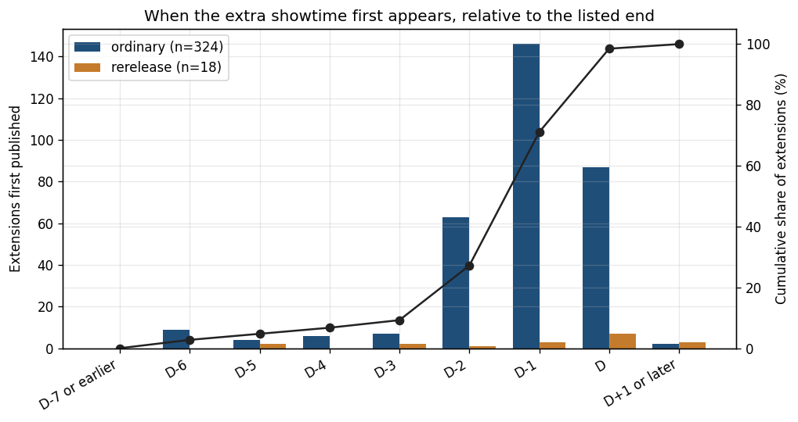
Each rule below flags an ending as genuine. Precision is the share of flagged endings that really ended. False-trust is the share that were extended anyway. Coverage is the share of holdout population A the rule is willing to call genuine. A rule that flags only a handful of rows can look precise without being useful; the N column is the check.
| Rule | Flagged | Coverage | Genuine precision | Genuine recall | False-trust |
|---|---|---|---|---|---|
| always_trust | 174 | 100.0% | 44.8% | 100.0% | 55.2% |
| within_2_days | 1 | 0.6% | 100.0% | 1.3% | 0.0% |
| within_2_and_no_other_theater_beyond | 0 | 0.0% | n/a | 0.0% | n/a |
| all_theaters_share_end | 83 | 47.7% | 75.9% | 80.8% | 24.1% |
| final_day_at_most_one | 89 | 51.1% | 74.2% | 84.6% | 25.8% |
| within_2_and_stable_3_snapshots | 0 | 0.0% | n/a | 0.0% | n/a |
| special_within_7 | 45 | 25.9% | 82.2% | 47.4% | 17.8% |
Those rules are scored on holdout population A, the first snapshot inside 7 days. Most of those snapshots are still 6 or 7 days out, so a rule that requires 2 days left barely fires. The same rules on the first holdout snapshot that is already within 2 days (n=230, extensions 117) are below.
| Rule at 2 days | Flagged | Coverage | Genuine precision | Genuine recall | False-trust |
|---|---|---|---|---|---|
| always_trust | 230 | 100.0% | 49.1% | 100.0% | 50.9% |
| within_2_days | 230 | 100.0% | 49.1% | 100.0% | 50.9% |
| within_2_and_no_other_theater_beyond | 149 | 64.8% | 66.4% | 87.6% | 33.6% |
| all_theaters_share_end | 115 | 50.0% | 73.0% | 74.3% | 27.0% |
| final_day_at_most_one | 118 | 51.3% | 80.5% | 84.1% | 19.5% |
| within_2_and_stable_3_snapshots | 226 | 98.3% | 49.1% | 98.2% | 50.9% |
| special_within_7 | 63 | 27.4% | 92.1% | 51.3% | 7.9% |
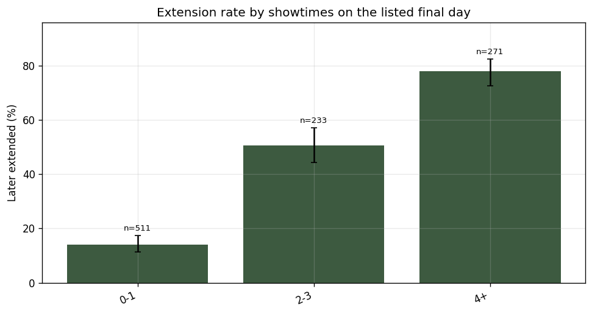
| Final-day showtimes | N | Extensions | Rate | CI low | CI high |
|---|---|---|---|---|---|
| 0-1 | 511 | 72 | 14.1% | 0.113 | 0.174 |
| 4+ | 271 | 211 | 77.9% | 0.725 | 0.824 |
| 2-3 | 233 | 118 | 50.6% | 0.443 | 0.570 |
The model predicts P(extension). Trusting the date means that probability is below a threshold chosen on the validation window so that, where possible, false-trust stays at or under 20% while genuine endings are still covered. Logistic threshold: 0.777. Tree status is in the rules below. Boosting status: ok.
| Model | N | PR-AUC | ROC-AUC | Brier | Extension precision | Extension recall | Genuine precision | Genuine recall | False-trust |
|---|---|---|---|---|---|---|---|---|---|
| Logistic regression | 174 | 0.894 | 0.8763354700854701 | 0.177 | 94.3% | 34.4% | 54.7% | 97.4% | 45.3% |
| Shallow tree | 174 | 0.859 | 0.8844818376068376 | 0.117 | 88.2% | 85.4% | 82.7% | 85.9% | 17.3% |
| Gradient boosting | 174 | 0.946 | 0.9224091880341881 | 0.116 | 98.2% | 58.3% | 65.8% | 98.7% | 34.2% |
| Baseline: always_trust | 174 | 0.552 | 0.5 | 0.552 | 0.0% | 0.0% | 44.8% | 100.0% | 55.2% |
| Baseline: segment_rate | 174 | 0.733 | 0.7578125 | 0.184 | 72.9% | 89.6% | 82.1% | 59.0% | 17.9% |
| Baseline: days_bucket_rate | 174 | 0.582 | 0.5510149572649573 | 0.277 | 56.9% | 99.0% | 85.7% | 7.7% | 14.3% |
| Baseline: one_minus_production | 174 | 0.840 | 0.7928685897435898 | 0.319 | 71.0% | 79.2% | 70.1% | 60.3% | 29.9% |
| Feature | Coefficient |
|---|---|
| left_truncated | -3.2428192041415818 |
| days_since_opening | 1.1031348063231823 |
| days_to_known_last | -0.8113368948039531 |
| screenings_on_final_day | 0.7987347205998013 |
| screenings_final_3_days | 0.7408241702701029 |
| segment_rerelease | 0.5181387621121037 |
| listed_end_wednesday | 0.44609659743671487 |
| all_theaters_share_listed_end | -0.4201598100208923 |
| share_other_theaters_on_same_end | -0.4150353851052409 |
| market_theater_count | 0.369649534720628 |
| days_since_last_extension | -0.3676476782508941 |
| listed_end_before_friday | -0.36501654544443446 |
A positive coefficient raises predicted extension risk. Days-to-end and the duplicate horizon from the earlier audit are not both in this model; only days to the listed end is.
|--- days_since_opening <= -2.50 | |--- days_since_opening <= -4.50 | | |--- screenings_final_3_days <= 1.50 | | | |--- class: 0 | | |--- screenings_final_3_days > 1.50 | | | |--- class: 0 | |--- days_since_opening > -4.50 | | |--- incoming_friday_screenings <= 29.00 | | | |--- class: 0 | | |--- incoming_friday_screenings > 29.00 | | | |--- class: 0 |--- days_since_opening > -2.50 | |--- left_truncated <= 0.50 | | |--- market_theater_count <= 2.50 | | | |--- class: 1 | | |--- market_theater_count > 2.50 | | | |--- class: 1 | |--- left_truncated > 0.50 | | |--- new_films_on_friday <= 3.50 | | | |--- class: 0 | | |--- new_films_on_friday > 3.50 | | | |--- class: 0
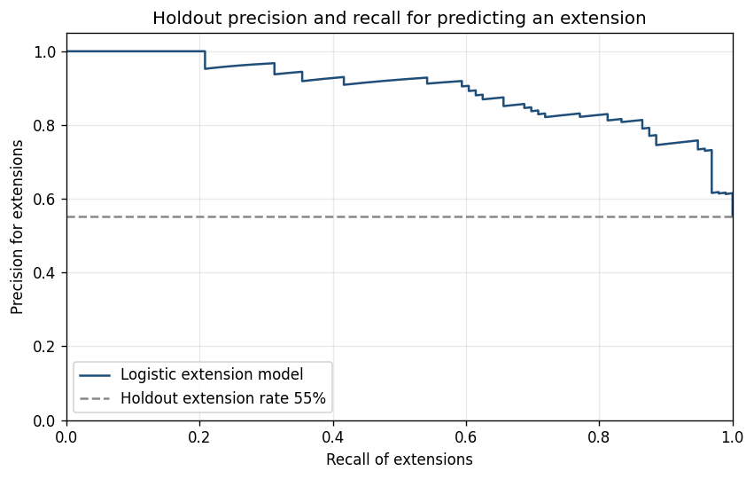
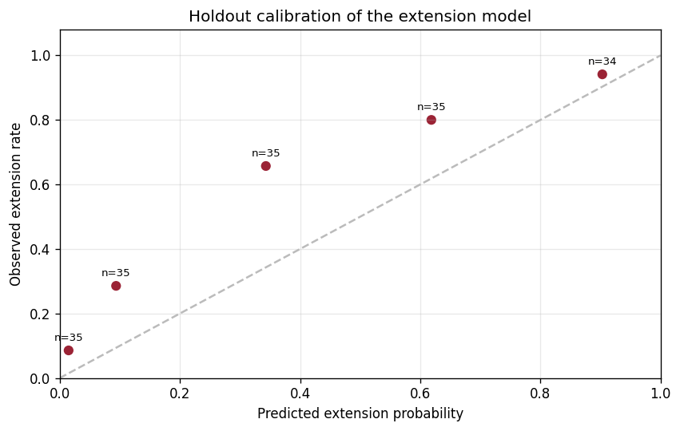
This is a research score only. Candidates treat a listed end inside 7 days as the candidate set, then multiply or gate it by extension risk. A short extension can still leave inside 7 days of the observation, so blocking every extension is not the same as predicting departure. Near-term holdout rows with no extension score, which fall back to trusting the listing: 0.
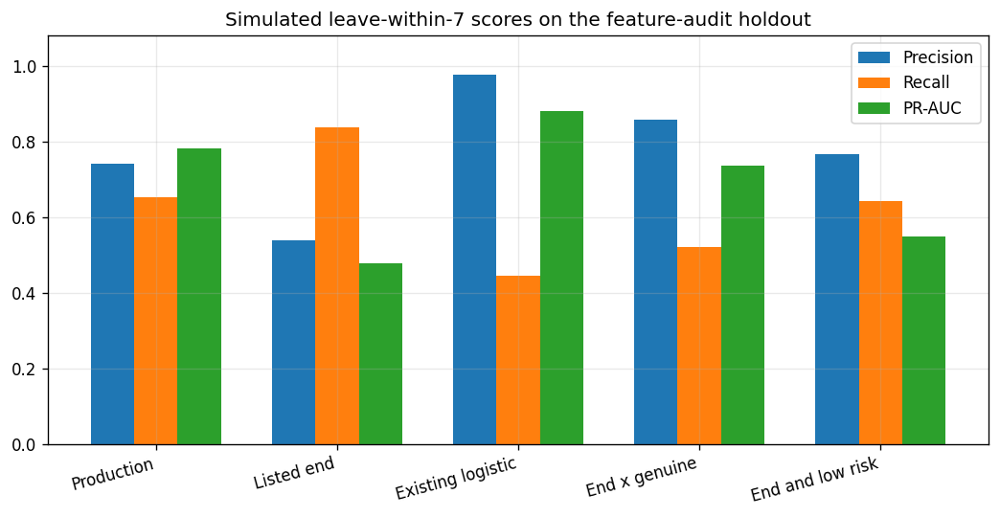
| Approach | N | Positives | Precision | Recall | F1 | PR-AUC | False positives | False negatives | Precision at 50% recall |
|---|---|---|---|---|---|---|---|---|---|
| Production Leaving Soon | 575 | 92 | 74.1% | 65.2% | 0.694 | 0.780 | 21 | 32 | 0.7419354838709677 |
| Naive listed end within 7 days | 575 | 92 | 53.8% | 83.7% | 0.655 | 0.477 | 66 | 15 | 0.6764705882352942 |
| Existing-feature logistic | 575 | 92 | 97.6% | 44.6% | 0.612 | 0.880 | 1 | 51 | 0.9387755102040817 |
| Listed end x P(genuine) | 575 | 92 | 85.7% | 52.2% | 0.649 | 0.736 | 8 | 44 | 0.8518518518518519 |
| Listed end and low extension risk | 575 | 92 | 76.6% | 64.1% | 0.698 | 0.549 | 18 | 33 | 0.8679245283018868 |
Holdout population A, at the validation-chosen threshold: 33 extensions anticipated in the exported sample, 40 unexpected extensions, 2 genuine endings called risky, 40 genuine endings trusted. The CSVs hold the rows. The table here is the earlier false-positive set, scored if the film qualified.
| Title | Theater | Observed | Listed end | Days | Extended | Days added | P(extension) | Production p7 | Others beyond | Call |
|---|---|---|---|---|---|---|---|---|---|---|
| Akira | AMC Alderwood Mall 16 | 2026-09-02 | 2026-09-09 | 7 | 1 | 7 | 0.9524 | 0.012376640671242589 | 1.0 | extension_anticipated |
| Akira | AMC Alderwood Mall 16 | 2026-09-07 | 2026-09-09 | 2 | 1 | 7 | 0.7602 | 0.021904892425655506 | 2.0 | unexpected_extension |
| Akira | AMC Kent Station 14 | 2026-09-02 | 2026-09-09 | 7 | 1 | 8 | 0.9757 | 0.012313587609576734 | 1.0 | extension_anticipated |
| Akira | AMC Kent Station 14 | 2026-09-07 | 2026-09-10 | 3 | 1 | 7 | 0.9914 | 0.016214586827268965 | 0.0 | extension_anticipated |
| Akira | AMC Pacific Place 11 | 2026-09-01 | 2026-09-04 | 3 | 1 | 12 | 0.8637 | 0.024798159497813613 | 4.0 | extension_anticipated |
| Akira | AMC Pacific Place 11 | 2026-09-07 | 2026-09-08 | 1 | 1 | 8 | 0.9 | 0.04255810806670506 | 4.0 | extension_anticipated |
| Akira | AMC Southcenter 16 | 2026-09-03 | 2026-09-10 | 7 | 1 | 6 | 0.9074 | 0.012189076815951235 | 0.0 | extension_anticipated |
| Akira | AMC Southcenter 16 | 2026-09-07 | 2026-09-10 | 3 | 1 | 6 | 0.862 | 0.01664396056356394 | 0.0 | extension_anticipated |
| Akira | AMC Woodinville 12 | 2026-09-02 | 2026-09-09 | 7 | 1 | 8 | 0.854 | 0.012496276056380307 | 1.0 | extension_anticipated |
| Akira | AMC Woodinville 12 | 2026-09-07 | 2026-09-09 | 2 | 1 | 8 | 0.8258 | 0.023321572901143686 | 2.0 | extension_anticipated |
| Buddy | AMC Alderwood Mall 16 | 2026-08-26 | 2026-09-02 | 7 | 1 | 29 | 0.7103 | 0.015927940698251365 | 0.0 | unexpected_extension |
| Buddy | AMC Alderwood Mall 16 | 2026-09-07 | 2026-09-09 | 2 | 1 | 22 | 0.9875 | 0.012136835346413695 | 0.0 | extension_anticipated |
| Buddy | AMC Factoria 8 | 2026-09-02 | 2026-09-09 | 7 | 1 | 7 | 0.9319 | 0.011103285355497287 | 0.0 | extension_anticipated |
| Buddy | AMC Factoria 8 | 2026-09-07 | 2026-09-09 | 2 | 1 | 7 | 0.9214 | 0.012473903400601139 | 0.0 | extension_anticipated |
| Buddy | AMC Kent Station 14 | 2026-08-26 | 2026-09-02 | 7 | 1 | 22 | 0.4429 | 0.018319388603986797 | 0.0 | unexpected_extension |
| Buddy | AMC Kent Station 14 | 2026-09-07 | 2026-09-09 | 2 | 1 | 15 | 0.9641 | 0.012211139767863748 | 0.0 | extension_anticipated |
| Buddy | AMC Oak Tree 6 | 2026-09-02 | 2026-09-09 | 7 | 1 | 7 | 0.8782 | 0.011131521822171154 | 0.0 | extension_anticipated |
| Buddy | AMC Oak Tree 6 | 2026-09-07 | 2026-09-09 | 2 | 1 | 7 | 0.8627 | 0.01253432341886159 | 0.0 | extension_anticipated |
| Buddy | AMC Pacific Place 11 | 2026-09-01 | 2026-09-04 | 3 | 1 | 20 | 0.8981 | 0.016490849105450355 | 4.0 | extension_anticipated |
| Buddy | AMC Pacific Place 11 | 2026-09-07 | 2026-09-09 | 2 | 1 | 15 | 0.9149 | 0.01266138025964308 | 0.0 | extension_anticipated |
| Buddy | AMC Southcenter 16 | 2026-08-25 | 2026-08-29 | 4 | 1 | 25 | 0.8039 | 0.773709679678699 | 1.0 | extension_anticipated |
| Buddy | AMC Southcenter 16 | 2026-09-07 | 2026-09-09 | 2 | 1 | 14 | 0.8814 | 0.012236728628782481 | 0.0 | extension_anticipated |
| Buddy | AMC Woodinville 12 | 2026-08-26 | 2026-09-02 | 7 | 1 | 21 | 0.3745 | 0.015927940698251365 | 0.0 | unexpected_extension |
| Buddy | AMC Woodinville 12 | 2026-09-07 | 2026-09-08 | 1 | 1 | 15 | 0.7218 | 0.01377464599822211 | 6.0 | unexpected_extension |
| Fall 2: Deadpoint | AMC Alderwood Mall 16 | 2026-09-02 | 2026-09-09 | 7 | 1 | 8 | 0.2955 | 0.014692599360377463 | 0.0 | unexpected_extension |
| Fall 2: Deadpoint | AMC Alderwood Mall 16 | 2026-09-07 | 2026-09-09 | 2 | 1 | 8 | 0.2223 | 0.04071400077313367 | 0.0 | unexpected_extension |
| Fall 2: Deadpoint | AMC Kent Station 14 | 2026-09-02 | 2026-09-09 | 7 | 1 | 8 | 0.2571 | 0.014692599360377463 | 0.0 | unexpected_extension |
| Fall 2: Deadpoint | AMC Kent Station 14 | 2026-09-07 | 2026-09-09 | 2 | 1 | 8 | 0.2033 | 0.04071400077313367 | 0.0 | unexpected_extension |
| Fall 2: Deadpoint | AMC Pacific Place 11 | 2026-09-01 | 2026-09-04 | 3 | 1 | 5 | 0.8202 | 0.06883852722366862 | 4.0 | extension_anticipated |
| Fall 2: Deadpoint | AMC Pacific Place 11 | 2026-09-07 | 2026-09-09 | 2 | 0 | 0 | 0.6567 | 0.04041385573157736 | 0.0 | genuine_trusted |
| Fall 2: Deadpoint | AMC Southcenter 16 | 2026-09-02 | 2026-09-09 | 7 | 1 | 7 | 0.2373 | 0.014692599360377463 | 0.0 | unexpected_extension |
| Fall 2: Deadpoint | AMC Southcenter 16 | 2026-09-07 | 2026-09-09 | 2 | 1 | 7 | 0.182 | 0.0410615669480764 | 0.0 | unexpected_extension |
| Fall 2: Deadpoint | AMC Woodinville 12 | 2026-08-27 | 2026-09-02 | 6 | 1 | 7 | 0.6879 | 0.02289100326301943 | 3.0 | unexpected_extension |
| Fall 2: Deadpoint | AMC Woodinville 12 | 2026-09-07 | 2026-09-09 | 2 | 0 | 0 | 0.358 | 0.04037111470335536 | 0.0 | genuine_trusted |
These are labels on the evidence. None of them are implemented.
On the leave-within-7 holdout, trusting a listed end inside 7 days recalls 83.7% of actual departures (precision 53.8%, 66 false positives).
On holdout population A the shallow tree's false-trust rate is 17.3%, against 55.2% if every near-term end is trusted, while still covering 85.9% of genuine endings. The logistic threshold does not travel as cleanly: its holdout false-trust rate is 45.3%. The hard simulation changes naive false positives from 66 to 18.
Other theaters already past this date: 0 theaters 28.2% (214/760, CI 25.1%–31.5%); 2+ theaters 83.8% (124/148, CI 77.0%–88.9%). Shared market end 20.8% (121/581, CI 17.7%–24.3%); split market 72.7% (256/352, CI 67.8%–77.1%). Share of extensions already published by D-2: 27.2%.
Special-event extension rate in population A is 6.8% (19/281, CI 4.4%–10.3%).
Extension-model PR-AUC is 0.894 against a days-to-end base-rate PR-AUC of 0.582. Simulated precision at 50% recall is 0.852 for listed-end times genuine probability and 0.939 for the existing-feature logistic. Ranking extensions is a real gain over a days-to-end rate. It does not beat that existing leave-within-7 logistic.